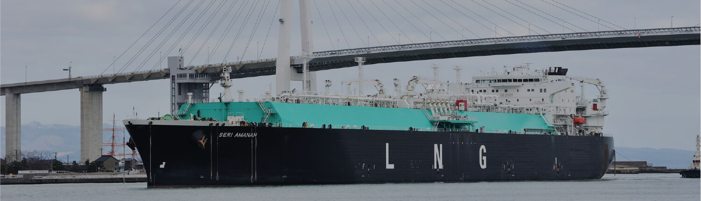

ロシアのウクライナ侵攻や脱炭素化による資源開発投資の減少等の影響により、燃料価格・電力取引価格の高騰や急激な価格変動、燃料安定確保の困難化など、エネルギーを取り巻く環境は大きく変化しています。
このような環境変化の中、エネルギー取引部門では、燃料と電力市場双方の需給動向や価格動向を踏まえた最適な需給計画を策定し、燃料の契約・受入調整、電力取引、実需給運用までを一元的に行うことで、電力の安定供給と利益の最大化の両立に取り組んでいます。
需給計画・運用業務においては、電力と燃料双方の価格動向を見据えつつ、発電所の補修時期や燃料の購入・配船時期を調整のうえ、将来の想定需要に見合う需給計画を策定するとともに、気温や天候等も考慮しながら日々の実需給運用を行っています。
燃料調達業務においては、需給状況や発電所の運転計画に合わせた燃料受入に向け、燃料供給会社・商社・海運会社等の多様な関係先との交渉・調整を行っています。
電力取引業務においては、需給計画をベースに、刻々と変化する電力市場の情報収集・分析を実施し、他事業者との交渉を通じた相対取引や卸電力取引所での市場取引を行っています。

燃料部 石炭・バイオマスチーム恒田 英哉
入社 / 2017年
経済学部卒業
現在に至るまでの経歴
2017年5月 石川支店 営業部 営業担当
2019年7月 石炭資源開発株式会社 出向
2021年7月 燃料部 石炭・バイオマスチーム
経歴は取材時点のものです

 入社動機は？
入社動機は？
地元北陸で規模の大きな仕事がしたいと考えていました。大学時代に海外長期留学を経験していたこともあり、グローバルスケールで物事を考え、海外の取引先を相手にビジネスを担っていける業界・業種を見ていました。北陸電力、そして燃料部門の存在を知り、さまざまな調達先と粘り強くタフな議論・交渉などに携われると考え、入社への思いを強くしました。
 現在の仕事、その魅力は？
現在の仕事、その魅力は？
原子力発電所の稼働停止を受け、発電の大部分を火力発電が占めている日本では、電力安定供給へ、火力発電の占める割合が高くなっています。私は調達部門で火力発電に使用する石炭調達、船舶の輸送手配を担当。世界中に取引先がある中、新規契約を結ぶのか既存契約を継続するのか、そこにあるリスクとリターンはなにか、さまざまな観点で調達先・調達手法を見極めながら、調達に取り組んでいます。安定的かつ経済性ある契約締結は交渉の良し悪しにかかっており、私の取組みは北陸地域に低廉な電気を安定的に届け、地域産業や暮らしを支えていくことにつながっています。燃料調達に日々やりがいを感じるとともに、この地域の未来、エネルギーの未来に視線を向け、新たなやり方も探っています。
 これからの目標は？
これからの目標は？
安定的かつ経済的な燃料の調達に注力することはもちろん、先の視点を持つことが大切だと考えています。最近では、2050年のカーボンニュートラルの実現に向けて電力各社が動き出しており、今後は主力燃料の調達が大きくシフトしていくことが予想されます。木質バイオマス、水素、アンモニアといった代替燃料の検討が始まっていますが、その中でも私は木質バイオマスに注目しています。これは森林資源を有効活用した燃料であり、再生可能な特性を持つものです。当社では現在国内の木質チップのみ利用していますが、今後は海外の木質チップの導入も予定されています。私の将来的な目標としては、北陸電力が自然と調和したクリーンな価値を打ち出していけるような調達方法を模索していきたいと考えています。
 学生へメッセージを
学生へメッセージを
世界情勢とともに、燃料自体、また調達のあり方も大きく変わっていきますが、変化の中にこそ活路は存在します。世界規模で物事を考え、北陸の未来づくりを一緒に担っていきましょう。

- 8:30
-
出社、輸送契約に関する各種対応
出社し、石炭輸送について船舶会社と契約内容を確認。専門用語等が多いため、認識の齟齬が発生しないように注意を払いながら内容を精査します。
- 11:00
-
WEBミーティング
日々、燃料を載せて世界中を航行している船舶、その輸送動向を把握するための打ち合わせは欠かせません。船舶会社とマーケット状況や今後の見通しについて確認します。
- 13:00
-
バイオマス燃料会社を訪問
燃料を扱う企業から新規納入の打診を受けるケースもあります。現地訪問し、バイオマス燃料となる木材チップ現物確認を実施。代替燃料活用の可能性を探ります。
バイオマス燃料となる木材チップ - 16:30
-
訪問内容の報告
訪問先でのヒアリング内容を上司に報告し、今後の案件進行、取引スキームについて検討を進めます。
- 18:00
-
終礼と世間話
チームでの終礼を実施し、報告事項をチーム内で共有。細かいことでもなんでも話せる関係性づくりへ、終礼後はメンバーと雑談することが多いです。
電力取引部 需給計画チーム中道 雄也
入社 / 2013年
経営学部卒業
現在に至るまでの経歴
2013年5月 株式会社北陸電力リビングサービス富山営業所 出向
2014年7月 営業部 電力受給取引チーム
2016年7月 中央給電指令所
2017年11月 電力流通部 給電計画チーム
2018年7月 需給運用・取引センター
2020年7月 電力取引部 需給計画チーム
経歴は取材時点のものです
入社動機は？
就職活動をはじめたばかりの頃、東日本大震災が発生しました。電力不足や計画停電についてニュースなどで目にし、電気が当たり前のものでなくなる状況に強い衝撃を受けたのを覚えています。当時は、どのように電気がつくられ送り届けられるのかを知らず、その価値について当たり前すぎて考えもしませんでした。その経験を通して社会インフラを担う電力会社に興味を持ち、電力業界の成立や近年の歩みを理解するうちに、生まれ育った北陸地域に貢献したいとの思いを強く抱き北陸電力を就職先に選びました。
現在の仕事、その魅力は？
地域の人々の生活を支えることは電力会社にとって至上命題ですが、それとともに大切なのは、地域を牽引していく存在としての北陸電力を形づくっていくこと。電力システム改革をチャンスととらえ、北陸電力は電力・非電力分野の多様な領域で挑んでいこうとしています。その基盤を構築し、新たな価値づくりを支えていく取組みの一つが電力取引です。これは需要に対して供給量が多くなった電気を同業他社や卸電力市場へ販売し、当社の利益確保につなげる役割を担うもの。私の仕事は、発電所の保修時期や燃料の配船時期を他部門と調整したうえで、卸電力取引を最大限活用した需給計画を策定することです。電気の安定供給を大前提に、自社供給力と他社相対取引・市場取引を最適に組み合わせ、利益最大化を目指します。需要推移をはじめ発電所の運転状況、卸電力市場の価格動向を見据え、総合的かつ長期的な視点のもと、未来における北陸電力の挑戦を支えていけるよう取り組んでいます。
これからの目標は？
歩んできたキャリアの大半は電力取引に関する業務です。たとえば、需給運用・取引センターの新規立ち上げ、それに伴う組織体制・システム構築など、業務プロセスを改善する重要な役割を年次の浅いうちから担うことができました。これまでの経験を活かして電力取引のプロフェッショナルを目指し、北陸電力が今後飛躍していく土台づくりをさらに進めるのが私の目標です。将来的には、知識や経験を周囲のメンバーへ伝え、後輩への指導を通じた組織全体のレベルアップに取り組みたいと考えています。
学生へメッセージを
電力システム改革が進む現在、入社時には存在していなかった部署や業務が次々と生まれています。国内外の動向に合わせてこれからも変わり続けていくのが電力業界であり、若手から活躍できる環境が北陸電力にはあります。変化の先をつくっていきたい人は、ぜひ当社に。そして、新たな仕事に自ら手を挙げて挑戦してみてください。
- 8:40
-
出社、需給状況・市況確認
刻々と変化する電力動向を把握するために、日々の需給状況、燃料市場状況の確認は欠かせません。この他にも翌日の電気を取引するスポット市場の取引結果など把握すべき情報は多々あります。
- 10:00
-
需給計画検討
今後1〜3年をターゲットとした需給計画の検討を進めます。直近の自社・他社の需給状況や市場動向を踏まえ、構築した計画案に適宜見直しをかけていきます。
- 13:00
-
WEB会議
他電力会社や金融機関、ときには海外現地企業などの取引先とWEB会議を実施。電力取引市況やお互いのニーズのすり合わせなど意見交換を行います。
- 15:00
-
デリバティブ取引活用方法検討
将来の卸電力市場における価格変動リスク回避のために、電力デリバティブ取引の活用について検討。社内体制の整備を行い、収益基盤強化に向けた取組みを進めています。
- 16:00
-
退社、子どもたちとの時間へ
勤務時間を調整できるフレックスタイム制度を活用し、この日は早めに帰宅しました。子どもたちと一緒にお風呂に入ることで、心も身体もリフレッシュできます。